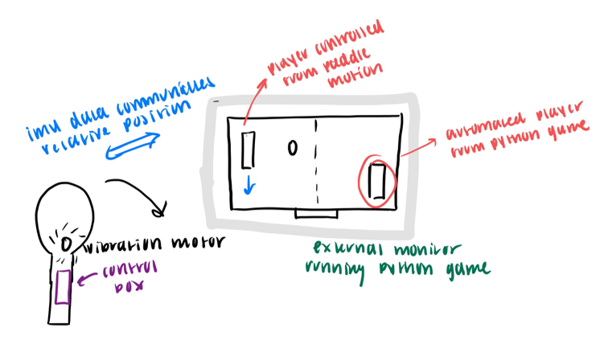
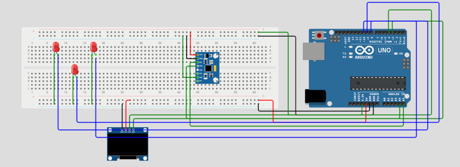

Wireless Pong Controller
A motion-controlled wireless game controller built with an Arduino R4 and IMU sensor — tilt the controller to move your Pong paddle, feel the haptic feedback on every hit.
The idea
For my final project in ME 3704 (Introduction to Mechatronics), I built a wireless game controller that lets users physically interact with a Python Pong game using motion. The project was inspired by the Wii remote and pushed me to integrate hardware, wireless communication, and software into one working system.
As the user tilts the controller forward and backward, the IMU reads Y-axis acceleration and streams it over a TCP connection to a Python script on my laptop, which maps the acceleration value to the player's paddle position in real time. Vibration motors in the controller fire on paddle contact for haptic feedback.
How it works
An Inertial Measurement Unit (IMU) connected to the Arduino R4 continuously reads Y-axis acceleration as the controller tilts. Values are filtered and normalized before transmission.
The Arduino sends acceleration data over a TCP (Transmission Control Protocol) connection to the laptop. TCP was chosen for its reliability.
A Python script receives the TCP stream and maps the acceleration value to the Pong paddle's Y position. The mapping is tuned so small tilts give precise control while large tilts give fast movement.
Vibration motors in the controller fire a short pulse whenever the paddle hits the ball, closing the feedback loop between the physical controller and the on-screen game.
Demo video
Replace the YouTube link below with your actual video URL after uploading.
Photos
.jpg)

